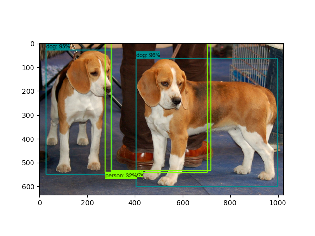
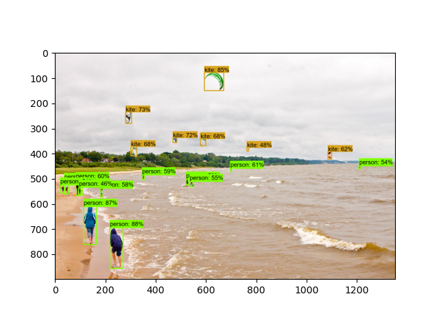

Note
Click here to download the full example code
Object Detection Test¶
This demo will take you through the steps of running an “out-of-the-box” detection model on a collection of images.
Create the data directory¶
The snippet shown below will create the data directory where all our data will be stored. The
code will create a directory structure as shown bellow:
data
├── images
└── models
where the images folder will contain the downlaoded test images, while models will
contain the downloaded models.
import os
DATA_DIR = os.path.join(os.getcwd(), 'data')
IMAGES_DIR = os.path.join(DATA_DIR, 'images')
MODELS_DIR = os.path.join(DATA_DIR, 'models')
for dir in [DATA_DIR, IMAGES_DIR, MODELS_DIR]:
if not os.path.exists(dir):
os.mkdir(dir)
Download the test images¶
First we will download the images that we will use throughout this tutorial. The code snippet
shown bellow will download the test images from the TensorFlow Model Garden
and save them inside the data/images folder.
import urllib.request
IMAGE_FILENAMES = ['image1.jpg', 'image2.jpg']
IMAGES_DOWNLOAD_BASE = \
'https://raw.githubusercontent.com/tensorflow/models/master/research/object_detection/test_images/'
for image_filename in IMAGE_FILENAMES:
image_path = os.path.join(IMAGES_DIR, image_filename)
# Download image
if not os.path.exists(image_path):
print('Downloading {}... '.format(image_filename), end='')
urllib.request.urlretrieve(IMAGES_DOWNLOAD_BASE + image_filename, image_path)
print('Done')
Out:
Downloading image1.jpg... Done
Downloading image2.jpg... Done
Download the model¶
The code snippet shown below is used to download the object detection model checkpoint file,
as well as the labels file (.pbtxt) which contains a list of strings used to add the correct
label to each detection (e.g. person). Once downloaded the files will be stored under the
data/models folder.
The particular detection algorithm we will use is the CenterNet HourGlass104 1024x1024. More models can be found in the TensorFlow 2 Detection Model Zoo. To use a different model you will need the URL name of the specific model. This can be done as follows:
Right click on the Model name of the model you would like to use;
Click on Copy link address to copy the download link of the model;
Paste the link in a text editor of your choice. You should observe a link similar to
download.tensorflow.org/models/object_detection/tf2/YYYYYYYY/XXXXXXXXX.tar.gz;Copy the
XXXXXXXXXpart of the link and use it to replace the value of theMODEL_NAMEvariable in the code shown below;Copy the
YYYYYYYYpart of the link and use it to replace the value of theMODEL_DATEvariable in the code shown below.
For example, the download link for the model used below is: download.tensorflow.org/models/object_detection/tf2/20200711/centernet_hg104_1024x1024_coco17_tpu-32.tar.gz
import tarfile
# Download and extract model
MODEL_DATE = '20200711'
MODEL_NAME = 'centernet_hg104_1024x1024_coco17_tpu-32'
MODEL_TAR_FILENAME = MODEL_NAME + '.tar.gz'
MODELS_DOWNLOAD_BASE = 'http://download.tensorflow.org/models/object_detection/tf2/'
MODEL_DOWNLOAD_LINK = MODELS_DOWNLOAD_BASE + MODEL_DATE + '/' + MODEL_TAR_FILENAME
PATH_TO_MODEL_TAR = os.path.join(MODELS_DIR, MODEL_TAR_FILENAME)
PATH_TO_CKPT = os.path.join(MODELS_DIR, os.path.join(MODEL_NAME, 'checkpoint/'))
PATH_TO_CFG = os.path.join(MODELS_DIR, os.path.join(MODEL_NAME, 'pipeline.config'))
if not os.path.exists(PATH_TO_CKPT):
print('Downloading model. This may take a while... ', end='')
urllib.request.urlretrieve(MODEL_DOWNLOAD_LINK, PATH_TO_MODEL_TAR)
tar_file = tarfile.open(PATH_TO_MODEL_TAR)
tar_file.extractall(MODELS_DIR)
tar_file.close()
os.remove(PATH_TO_MODEL_TAR)
print('Done')
# Download labels file
LABEL_FILENAME = 'mscoco_label_map.pbtxt'
LABELS_DOWNLOAD_BASE = \
'https://raw.githubusercontent.com/tensorflow/models/master/research/object_detection/data/'
PATH_TO_LABELS = os.path.join(MODELS_DIR, os.path.join(MODEL_NAME, LABEL_FILENAME))
if not os.path.exists(PATH_TO_LABELS):
print('Downloading label file... ', end='')
urllib.request.urlretrieve(LABELS_DOWNLOAD_BASE + LABEL_FILENAME, PATH_TO_LABELS)
print('Done')
Out:
Downloading model. This may take a while... Done
Downloading label file... Done
Load the model¶
Next we load the downloaded model
os.environ['TF_CPP_MIN_LOG_LEVEL'] = '2' # Suppress TensorFlow logging (1)
import tensorflow as tf
from object_detection.utils import label_map_util
from object_detection.utils import config_util
from object_detection.utils import visualization_utils as viz_utils
from object_detection.builders import model_builder
tf.get_logger().setLevel('ERROR') # Suppress TensorFlow logging (2)
# Enable GPU dynamic memory allocation
gpus = tf.config.experimental.list_physical_devices('GPU')
for gpu in gpus:
tf.config.experimental.set_memory_growth(gpu, True)
# Load pipeline config and build a detection model
configs = config_util.get_configs_from_pipeline_file(PATH_TO_CFG)
model_config = configs['model']
detection_model = model_builder.build(model_config=model_config, is_training=False)
# Restore checkpoint
ckpt = tf.compat.v2.train.Checkpoint(
model=detection_model)
ckpt.restore(os.path.join(PATH_TO_CKPT, 'ckpt-0')).expect_partial()
@tf.function
def detect_fn(image):
"""Detect objects in image."""
image, shapes = detection_model.preprocess(image)
prediction_dict = detection_model.predict(image, shapes)
detections = detection_model.postprocess(prediction_dict, shapes)
return detections, prediction_dict, tf.reshape(shapes, [-1])
Load label map data (for plotting)¶
Label maps correspond index numbers to category names, so that when our convolution network predicts 5, we know that this corresponds to airplane. Here we use internal utility functions, but anything that returns a dictionary mapping integers to appropriate string labels would be fine.
category_index = label_map_util.create_category_index_from_labelmap(PATH_TO_LABELS,
use_display_name=True)
Putting everything together¶
The code shown below loads an image, runs it through the detection model and visualizes the detection results, including the keypoints.
Note that this will take a long time (several minutes) the first time you run this code due to tf.function’s trace-compilation — on subsequent runs (e.g. on new images), things will be faster.
Here are some simple things to try out if you are curious:
Modify some of the input images and see if detection still works. Some simple things to try out here (just uncomment the relevant portions of code) include flipping the image horizontally, or converting to grayscale (note that we still expect the input image to have 3 channels).
Print out detections[‘detection_boxes’] and try to match the box locations to the boxes in the image. Notice that coordinates are given in normalized form (i.e., in the interval [0, 1]).
Set
min_score_threshto other values (between 0 and 1) to allow more detections in or to filter out more detections.
import numpy as np
from six import BytesIO
from PIL import Image
import matplotlib.pyplot as plt
import warnings
warnings.filterwarnings('ignore') # Suppress Matplotlib warnings
def load_image_into_numpy_array(path):
"""Load an image from file into a numpy array.
Puts image into numpy array to feed into tensorflow graph.
Note that by convention we put it into a numpy array with shape
(height, width, channels), where channels=3 for RGB.
Args:
path: the file path to the image
Returns:
uint8 numpy array with shape (img_height, img_width, 3)
"""
img_data = tf.io.gfile.GFile(path, 'rb').read()
image = Image.open(BytesIO(img_data))
(im_width, im_height) = image.size
return np.array(image.getdata()).reshape(
(im_height, im_width, 3)).astype(np.uint8)
for image_filename in IMAGE_FILENAMES:
print('Running inference for {}... '.format(image_filename), end='')
image_path = os.path.join(IMAGES_DIR, image_filename)
image_np = load_image_into_numpy_array(image_path)
# Things to try:
# Flip horizontally
# image_np = np.fliplr(image_np).copy()
# Convert image to grayscale
# image_np = np.tile(
# np.mean(image_np, 2, keepdims=True), (1, 1, 3)).astype(np.uint8)
input_tensor = tf.convert_to_tensor(
np.expand_dims(image_np, 0), dtype=tf.float32)
detections, predictions_dict, shapes = detect_fn(input_tensor)
label_id_offset = 1
image_np_with_detections = image_np.copy()
viz_utils.visualize_boxes_and_labels_on_image_array(
image_np_with_detections,
detections['detection_boxes'][0].numpy(),
(detections['detection_classes'][0].numpy() + label_id_offset).astype(int),
detections['detection_scores'][0].numpy(),
category_index,
use_normalized_coordinates=True,
max_boxes_to_draw=200,
min_score_thresh=.30,
agnostic_mode=False)
plt.figure()
plt.imshow(image_np_with_detections)
print('Done')
plt.show()
# sphinx_gallery_thumbnail_number = 2
- 
- 
Out:
Running inference for image1.jpg... Done
Running inference for image2.jpg... Done
Total running time of the script: ( 2 minutes 29.261 seconds)